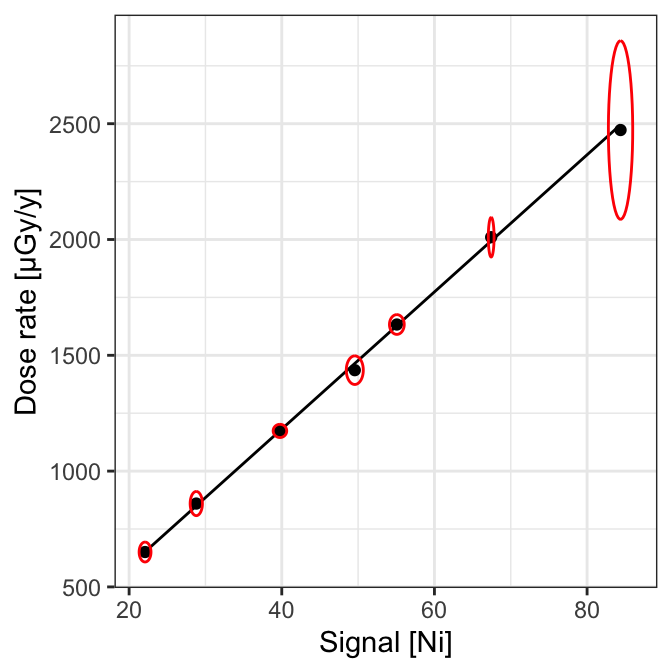

CRP2A Calibration Curve #1
Canberra Inspector 1000 - LaBr
CRP2A Luminescence Team
2020-05-12
Source:vignettes/crp2a_1.Rmd
crp2a_1.RmdImport Files
# Import CNF files for calibration calib_dir <- system.file("extdata/BDX_LaBr_1/calibration", package = "gamma") (calib_spc <- read(calib_dir)) #> A collection of 7 gamma spectra: BRIQUE, C341, C347, GOU, LMP, MAZ, PEP # Import CNF files for background noise measurement noise_dir <- system.file("extdata/BDX_LaBr_1/background", package = "gamma") (noise_spc <- read(noise_dir)) #> Gamma spectrum: #> * name: BDF #> * date: 2009-07-24 10:22:46 #> * live_time: 18296.71 #> * real_time: 18327.16 #> * chanels: 1024 #> * energy_min: -1.92132455076353 #> * energy_max: 3323.47116756439
Inspect Spectra
Reference Spectra
BRIQUE
plot(calib_spc[["BRIQUE"]], xaxis = "chanel", yaxis = "rate") + ggplot2::geom_vline(xintercept = c(76, 465, 828), linetype = 2) + ggplot2::labs(title = "BRIQUE") + ggplot2::theme_bw()

lines <- list(chanel = c(76, 465, 828), energy = c(238, 1461, 2615)) BRIQUE_calib <- calibrate_energy(calib_spc[["BRIQUE"]], lines = lines) integrate_signal(BRIQUE_calib, range = c(300, 2800), noise = c(22.608, 0.050)) #> Ni_signal Ni_error #> 90.0371159 0.1457792
C341
plot(calib_spc[["C341"]], xaxis = "energy", yaxis = "rate") + ggplot2::labs(title = "C341") + ggplot2::theme_bw()


Calibration Curve
Summary
data("BDX_LaBr_1_curve") # Plot calibration curve plot(BDX_LaBr_1_curve, threshold = "Ni") + ggplot2::theme_bw() plot(BDX_LaBr_1_curve, threshold = "NiEi") + ggplot2::theme_bw()

| name | live_time | Ni_signal | Ni_error | NiEi_signal | NiEi_error | gamma_dose | gamma_error | cosmic_dose | cosmic_error |
|---|---|---|---|---|---|---|---|---|---|
| BRIQUE | 8473.45 | 67.43451 | 0.1540298 | 64071.59 | 4.592473 | 2010.000 | 35.00000 | 152 | 6 |
| C347 | 703.92 | 49.56603 | 0.4558524 | 46580.21 | 14.298170 | 1435.816 | 25.24976 | 170 | 18 |
| C341 | 976.08 | 28.80028 | 0.3283521 | 27974.89 | 10.446440 | 859.878 | 21.31762 | 170 | 18 |
| PEP | 507.07 | 84.38263 | 0.6515544 | 80121.52 | 20.390773 | 2472.684 | 157.60759 | 140 | 14 |
| LMP | 908.20 | 22.08853 | 0.3176802 | 21227.36 | 10.121181 | 650.613 | 17.56065 | 120 | 20 |
| MAZ | 965.86 | 39.75933 | 0.3629449 | 38008.82 | 11.452850 | 1173.550 | 11.66505 | 200 | 20 |
| GOU | 1008.58 | 55.07602 | 0.3957339 | 52645.12 | 12.434331 | 1632.992 | 17.43379 | 110 | 11 |
#> value error
#> Min. :-2.429 Min. : 0.6533
#> 1st Qu.: 5.579 1st Qu.: 7.4279
#> Median :13.586 Median :14.2025
#> Mean :13.586 Mean :14.2025
#> 3rd Qu.:21.594 3rd Qu.:20.9770
#> Max. :29.602 Max. :27.7516#> value error
#> Min. :-18.7668 Min. : 0.000623
#> 1st Qu.:-14.0672 1st Qu.: 6.264076
#> Median : -9.3677 Median :12.527530
#> Mean : -9.3677 Mean :12.527530
#> 3rd Qu.: -4.6681 3rd Qu.:18.790983
#> Max. : 0.0314 Max. :25.054437R session
#> R version 4.0.0 (2020-04-24)
#> Platform: x86_64-apple-darwin17.0 (64-bit)
#> Running under: macOS Catalina 10.15.4
#>
#> Matrix products: default
#> BLAS: /Library/Frameworks/R.framework/Versions/4.0/Resources/lib/libRblas.dylib
#> LAPACK: /Library/Frameworks/R.framework/Versions/4.0/Resources/lib/libRlapack.dylib
#>
#> locale:
#> [1] en_US.UTF-8/en_US.UTF-8/en_US.UTF-8/C/en_US.UTF-8/en_US.UTF-8
#>
#> attached base packages:
#> [1] stats graphics grDevices utils datasets methods base
#>
#> other attached packages:
#> [1] magrittr_1.5 gamma_0.2.0
#>
#> loaded via a namespace (and not attached):
#> [1] Rcpp_1.0.4.6 highr_0.8 compiler_4.0.0 pillar_1.4.4
#> [5] tools_4.0.0 digest_0.6.25 evaluate_0.14 memoise_1.1.0
#> [9] lifecycle_0.2.0 tibble_3.0.1 gtable_0.3.0 pkgconfig_2.0.3
#> [13] rlang_0.4.6 yaml_2.2.1 pkgdown_1.5.1.9000 xfun_0.13
#> [17] rxylib_0.2.4 stringr_1.4.0 knitr_1.28 desc_1.2.0
#> [21] fs_1.4.1 vctrs_0.3.0 rprojroot_1.3-2 grid_4.0.0
#> [25] glue_1.4.0 R6_2.4.1 rmarkdown_2.1 ggplot2_3.3.0
#> [29] farver_2.0.3 IsoplotR_3.3 backports_1.1.6 scales_1.1.1
#> [33] htmltools_0.4.0 ellipsis_0.3.0 MASS_7.3-51.5 assertthat_0.2.1
#> [37] colorspace_1.4-1 labeling_0.3 stringi_1.4.6 munsell_0.5.0
#> [41] crayon_1.3.4